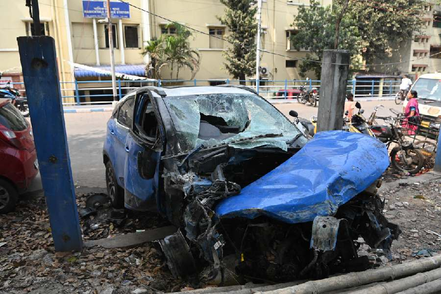

কলকাতা, ১ ডিসেম্বর – আজ সকালে শহরের ব্যস্ত মানিক তলায় একটি ভয়াবহ দুর্ঘটনা ঘটেছে। একটি ১৬ চাকার লরি চলন্ত অবস্থায় এক পথচারীকে পেছনে চাপা দিয়ে চলে যায়। ঘটনাস্থলেই পথচারীর মৃত্যু হয়। স্থানীয়রা সঙ্গে সঙ্গে পুলিশকে খবর দেন, এবং মৃতদেহ উদ্ধার করে হাসপাতালের মর্গে নেওয়া হয়েছে।
প্রত্যক্ষদর্শীরা জানিয়েছেন, সকাল প্রায় সাতটার দিকে লরিটি মানিক তলায় প্রবেশ করার সময় পথচারী রাস্তা পারাপারের চেষ্টা করছিল। হঠাৎ লরিটি তাকে চাপা দেয়। আশপাশের মানুষ আতঙ্কিত হয়ে ছুটে গিয়ে ঘটনাস্থল ঘিরে ফেলে। স্থানীয়রা আহত ব্যক্তিকে উদ্ধার করতে পারেননি, কারণ দুর্ঘটনা এতটাই তীব্র ছিল যে তিনি ঘটনাস্থলেই মারা যান।

চিত্র: সরিয়ে রাখা গাড়ীটি
স্থানীয় বাসিন্দা অমিত বণিক বলেন, “আমি দোকানের সামনে দাঁড়িয়ে ছিলাম। হঠাৎ লরির ধ্বনিতে সবাই চমকে গেল। পথচারী পড়ে যায়। আমরা দ্রুত চেষ্টা করি, কিন্তু তার প্রাণ রক্ষা করা যায়নি।”
প্রত্যক্ষদর্শী মিতা সেন বলেন, “এমন দুর্ঘটনা মানিক তলার মতো ব্যস্ত এলাকায় ঘটার সম্ভাবনা সবসময় থাকে। বড় যানবাহন এবং পথচারীর মধ্যে দূরত্ব ঠিক না রাখলে বিপদ ঘটে।”
স্থানীয়রা আরও জানান, মানিক তলার রাস্তাগুলো প্রায়ই ব্যস্ত থাকে। বিশেষ করে সকালে ও দুপুরে, যেখানে বড় লরি ও ট্রাক চলাচল করে, সেখানে এই ধরনের দুর্ঘটনার ঝুঁকি সবসময় থাকে। অনেকেই মনে করছেন, নিয়মিত ট্রাফিক নিয়ন্ত্রণ এবং বড় যানবাহনের জন্য বিশেষ সতর্কতার ব্যবস্থা না থাকায় এই দুর্ঘটনা ঘটেছে।
পুলিশ জানিয়েছে, তারা লরির ড্রাইভার ও মালিককে দ্রুত শনাক্ত করার চেষ্টা করছে। সিসিটিভি ফুটেজ সংগ্রহ করা হচ্ছে এবং আশেপাশের এলাকায় তল্লাশি চালানো হচ্ছে। ট্রাফিক বিভাগ রাস্তায় সাময়িক নিয়ন্ত্রণ বজায় রাখছে এবং সাধারণ মানুষকে সতর্ক থাকার নির্দেশ দিয়েছে।
পুলিশের একজন কর্মকর্তা বলেন, “এটি অত্যন্ত দুঃখজনক ঘটনা। আমরা লরিটি খুঁজে বের করার চেষ্টা করছি এবং ঘটনার তদন্ত চালাচ্ছি। সাধারণ মানুষকে রাস্তায় সতর্ক থাকার জন্য বার্তা দেওয়া হচ্ছে।”
শহরের মানুষ নিহত পথচারীর পরিবারের প্রতি সমবেদনা জানাচ্ছেন। স্থানীয় প্রশাসনও এই ধরনের দুর্ঘটনা প্রতিরোধের জন্য ট্রাফিক নিয়ন্ত্রণ এবং নিরাপত্তা ব্যবস্থা বাড়ানোর প্রতিশ্রুতি দিয়েছে। আজকের এই দুর্ঘটনা শহরের ব্যস্ত রাস্তায় বড় যানবাহনের সচেতনতার প্রয়োজন এবং ট্রাফিক নিয়ম মেনে চলার গুরুত্বকে আবারও স্মরণ করিয়ে দিয়েছে।
[1]
->>